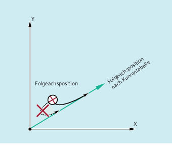
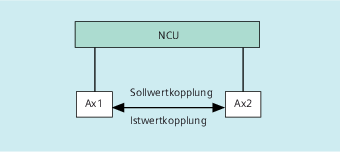

Beschreibung
Die Leitwertkopplung erfordert die Synchronisation von Leit- und Folgeachse. Diese Synchronisation kann nur erreicht werden, wenn die Folgeachse bei Einschalten der Leitwertkopplung innerhalb des Toleranzbereiches des aus der Kurventabelle berechneten Kurvenzugs steht.
Der Toleranzbereich für die Stellung der Folgeachse ist über Maschinendatum MD37200 $MA_COUPLE_POS_POL_COARSE A_LEAD_TYPE definiert.
Befindet sich die Folgeachse mit dem Einschalten der Leitwertkopplung noch nicht an der entsprechenden Position, wird der Synchronlauf automatisch hergestellt, sobald sich der berechnete Positionssollwert für die Folgeachse der tatsächlichen Folgeachsposition nähert. Die Folgeachse wird dabei während des Synchronisationsvorganges in die Richtung verfahren, die durch die Sollgeschwindigkeit der Folgeachse (berechnet aus Leitachsgeschwindigkeit und nach Kurventabelle CTAB) definiert ist.
Kein Synchronlauf
Entfernt sich die berechnete Folgeachssollposition mit Einschalten der Leitwertkopplung von der aktuellen Folgeachsposition, wird kein Synchronlauf hergestellt.
Ist- und Sollwertkupplung
Die Sollwertkopplung liefert im Vergleich zur Istwertkopplung einen besseren Synchronlauf zwischen Leit- und Folgeachse und ist deshalb standardmäßig voreingestellt.
Sollwertkopplung ist nur möglich, wenn Leit- und Folgeachse von derselben NCU interpoliert werden. Bei einer externen Leitachse kann die Folgeachse nur über Istwerte an die Leitachse gekoppelt werden.

Eine Umschaltung ist über das Settingdatum $SA_LEAD_TYPE möglich.
Das Umschalten zwischen Ist- und Sollwertkopplung sollte immer bei Stillstand der Folgeachse erfolgen. Denn nur im Stillstand wird nach dem Umschalten neu synchronisiert.
Anwendungsbeispiel
Das Lesen der Istwerte kann bei großen Maschinenerschütterungen nicht fehlerfrei erfolgen. Beim Einsatz der Leitwertkopplung im Pressentransfer kann es daher in den Arbeitsschritten mit größten Erschütterungen notwendig werden, von Istwertkopplung auf Sollwertkopplung umzuschalten.
Leitwertsimulation bei Sollwertkopplung
Über Maschinendatum lässt sich der Interpolator für die Leitachse vom Servo trennen. Damit können bei Sollwertkopplung Sollwerte ohne tatsächliche Bewegung der Leitachse erzeugt werden.
Die über Sollwertkopplung erzeugten Leitwerte sind zur Benutzung z. B. in Synchronaktionen aus folgenden Variablen lesbar:
- $AA_LEAD_P | Leitwert Position |
- $AA_LEAD_V | Leitwert Geschwindigkeit |
Leitwerte erzeugen
Leitwerte können wahlweise mit anderen selbst programmierten Verfahren erzeugt werden. Die so erzeugten Leitwerte werden in die Variable
- $AA_LEAD_SP | Leitwert Position |
- $AA_LEAD_SV | Leitwert Geschwindigkeit |
geschrieben und aus ihnen gelesen. Zur Benutzung dieser Variablen muss das Settingdatum $SA_LEAD_TYPE = 2 gesetzt werden.
Status der Kopplung
Im NC-Teileprogramm können Sie den Kopplungsstatus mit folgender Systemvariablen abfragen:
$AA_COUP_ACT[<Ax>]
0: Keine Kopplung aktiv
16: Leitwertkopplung aktiv
Status-Verwaltung bei Synchronaktionen
Schalt- und Koppelvorgänge werden über Echtzeitvariablen:
$AC_MARKER[<i>]=<n>
verwaltet mit:
<i> = Merker-Nummer
<n> = Statuswert